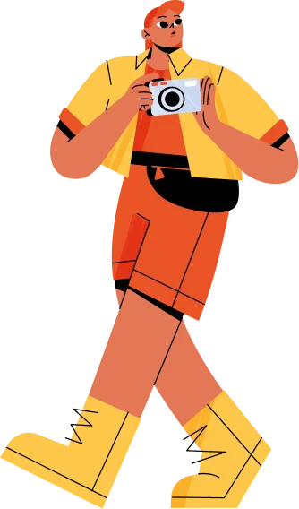

Hatachana
Brand identity and digital experience for guided tours inside Tel Aviv’s Central Bus Station.
Academic concept — not a client project- Project
- Academic concept
- Type
- Brand identity & digital experience
- Deliverables
- Identity · Illustration · Iconography · Mobile app
- Subject
- Tel Aviv Central Bus Station
- Focus
- Guided tours

01Context & objectives
From curiosity to a guided visit.
Tel Aviv’s Central Bus Station has become an attraction for people interested in unusual and abandoned urban spaces. The challenge was to turn that curiosity into a guided experience that feels safe, accessible and easy to navigate.
The brief called for a visual identity and a mobile app that lets users discover tours, view details and register for a guided visit.
02Visual identity
Industrial, but approachable.
The identity balances the raw, urban character of the station with a clear, approachable digital system. Industrial neutrals set the atmosphere, while a strong yellow adds visibility, guidance and a sense of movement through the space.
Wordmark and icon. A bold Hebrew wordmark paired with a compact icon, built to move between physical and digital applications.
Typography. A Hebrew type scale with two heading sizes (24 and 20 px) and two text sizes (14 and 12 px).
03Illustration & design system
People first, then components.
Character illustrations make the experience feel more human against the station’s heavier urban character. The same explorers appear in the identity and inside the app.
Line icons for bookmarks, time, date, price, home and profile sit with reusable buttons and form fields, so every screen draws on the same parts.


04Digital experience
Discover. Choose. Book.
The core of the app is tour discovery and booking: a card list of tours, a detail page with duration, price, date, guide and group size, and a booking confirmation. Onboarding and account screens support it.
Getting started
05Final applications
The identity in use.
The wordmark, illustration and palette carry from the app to a landing page, shown here on a laptop. Hatachana is an academic concept, not a client project.
- IdentityWordmark, icon and colour palette.
- IllustrationExplorer characters.
- Design systemType scale, icons, buttons and form fields.
- Mobile appTour discovery, details, booking, onboarding and sign-in.
- Landing pageWeb layout with app store badges.